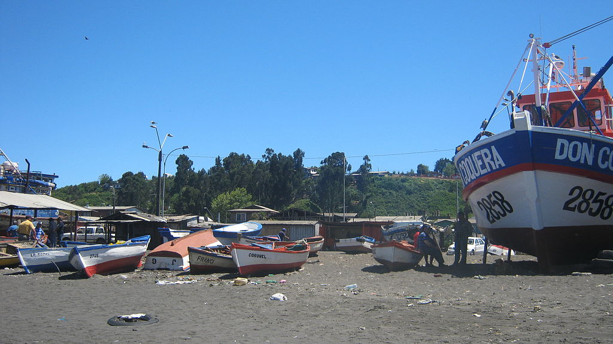

Pescadores artesanales de Caleta Lo Rojas suspenden sus servicios a empresa Blumar, dueños de embarcación Cobra
La decisión fue anunciada por la Asociación Gremial Lo Rojas de Coronel, en solidaridad con las familias de los siete tripulantes desaparecidos de la lancha Bruma.
La tarde de este domingo 6 de abril, la Asociación Gremial Lo Rojas de Coronel anunció que suspenderá sus servicios a la pesquera Blumar, empresa dueña de la embarcación "Cobra", y principal sindicada como responsable en el hundimiento de la lancha "Bruma", la cual iba con siete pescadores a bordo, los cuales continúan desaparecidos.
La decisión fue tomada de forma unánime, en solidaridad con las familias de los siete pescadores desaparecidos. "Lamentamos profundamente la pérdida de ellos y el poco esclarecimiento que hay con respecto al tema. Hemos determinado suspender todos los movimientos hasta que se esclarezca este asunto y se vayan desenredando los cientos de hipótesis que nos hacemos, y que se han dado en las últimas horas", indican desde la organización gremial, presidida por Francisco Silva Burgos.
Dentro del comunicado, la organización indicó la importancia de esclarecer las dudas que existen sobre el accidente sufrido por la lancha Bruma, así como también la posterior desaparición de uno de los tripulantes de la embarcación Cobra, el pasado viernes 4 de abril.
La Caleta está compuesta de 500 embarcaciones artesanales, a las cuales el muelle artesanal les presta servicios, en una zona por donde pasa el mayor movimiento que ocurre en la bahía. Hasta la fecha son 13 los pescadores artesanales fallecidos en diferentes siniestros, lo que preocupa al gremio de la pesca artesanal.